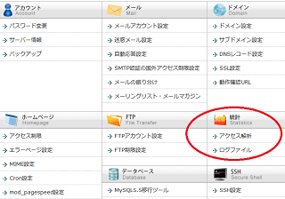
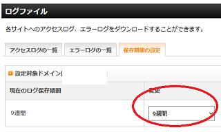
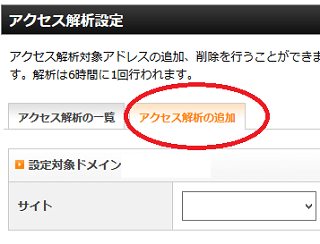
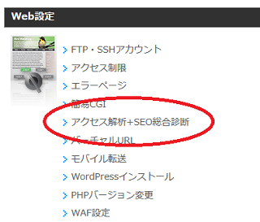
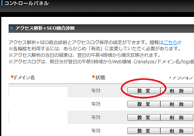
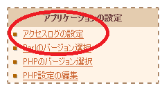
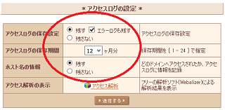
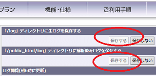
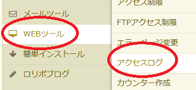
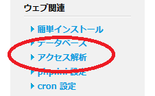

サーバーアクセスログの設定方法
レンタルサーバーを契約した際には、アクセスログの保存設定をしておくことをおすすめします。
不正アクセスにあった際など、後々何らかの事情でアクセスログが必要になることもありますが、たいていのレンタルサーバーでは自動ではデータが保存されません。ユーザーが保存設定をしてからデータが蓄積されていく仕様が多いため、契約した段階で設定しておくことをおすすめします。
また、一定期間が経過したらデータが削除されるケースも多いため、可能であれば、定期的にアクセスログをダウンロードしてPC内に保存しておくとよいでしょう。
加えて、「Awstats」などのアクセスログの解析ツールを利用する場合、こちらも利用するには設定をしておかないとデータが集積されていきません。「アクセスログ」と「アクセス解析ツール」の設定を契約した段階でしておくことをおすすめします。
■エックスサーバーの例
エックスサーバーでは「ログファイル」の箇所から保存設定ができます。

ログの保存期間は最大で「9週間」となっています。

また、エックスサーバーの場合、「アクセスログの保存設定」のほかにも、アクセス解析ツールも追加しておくとよいでしょう。

■お名前.comレンタルサーバーの場合
お名前.comサーバーの場合、コントロールパネルの「アクセス解析+SEO総合診断」の箇所から設定できます。

設定を「有効」にしておくとよいでしょう。

お名前.comレンタルサーバーの場合、オリジナルのアクセス解析のツールを利用することができます。
■さくらインターネットの例
さくらインターネットの場合、ドメインごとにデータを解析するには、「ホスト名の情報」の箇所の設定も必要になります。こちらも「残す」に設定しておくとよいでしょう。


■コアサーバーの例
コアサーバーの場合、「アクセスログ閲覧」の箇所から保存設定をすることができます。

■ロリポップの例
ロリポップ！の場合、特に設定は必要ありません。
90日間は自動で保存されますので、定期的にログをダウンロードしておくことをおすすめします。

■ヘテムルの例
ヘテムルもログの保存設定は必要ありませんが、ダウンロードできるのは「過去 30 日分」となっています。

上記のように、なかには何もしなくても自動で保存されるレンタルサーバーもありますが、ほとんどのケースでは最初に「保存設定」をしておかないとデータが蓄積されていきません。サーバー契約をした際には、まずはアクセスログの保存設定をしておくとよいでしょう。
次のページ → クローラーアクセスの確認方法